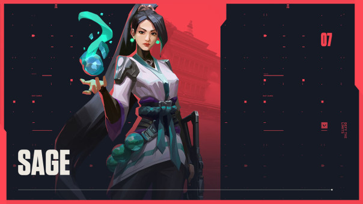
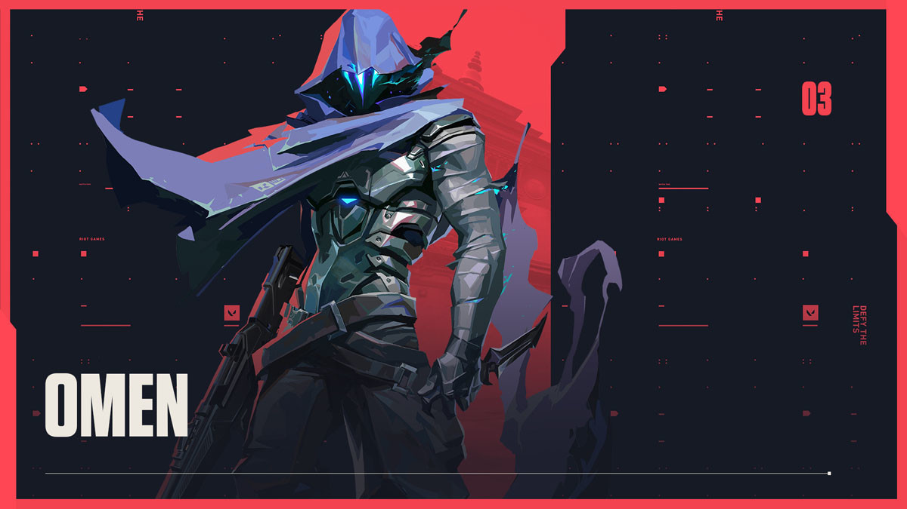
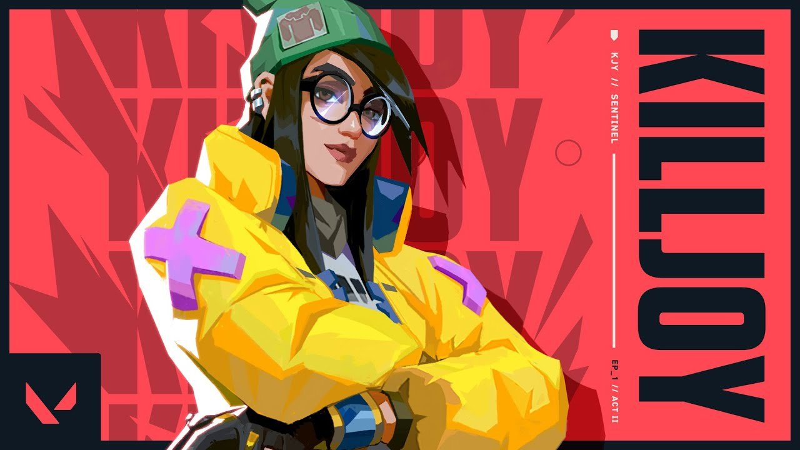
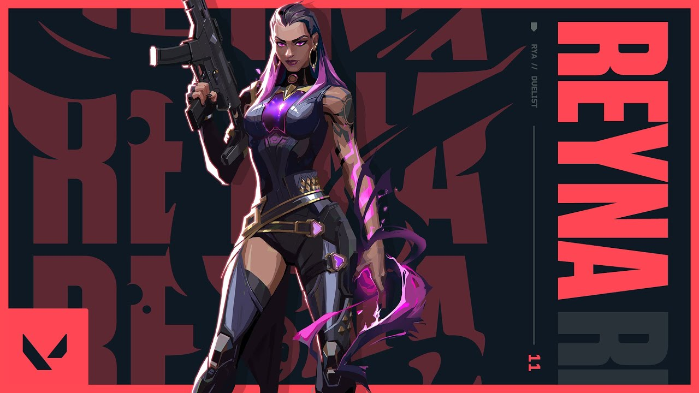
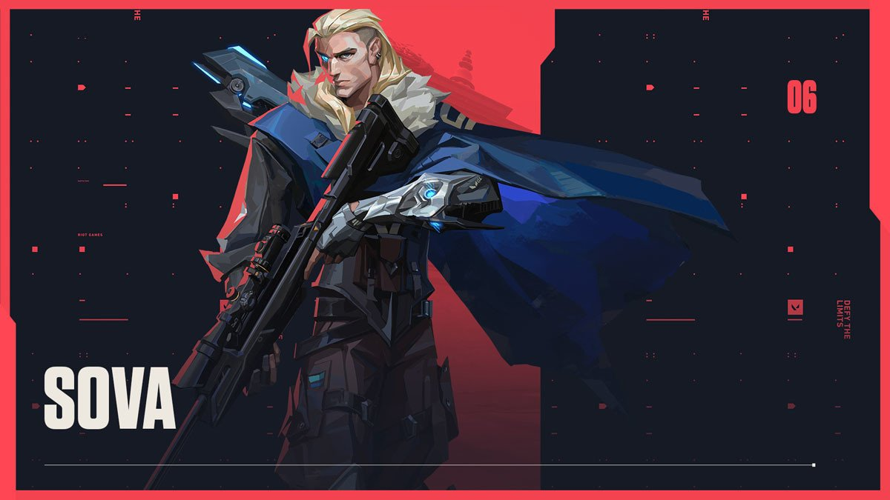

Ini dia 5 Agent yang cocok untuk digunakan dalam pertandingan Valorant di Ascent versi zdnpl!
Dalam game Valorant, ada beberapa map yang bisa kalian mainkan. Tak hanya itu, terdapat beberapa Agent yang memiliki skill unik berbeda yang bisa kalian pilih. Memang, tiap Agent memiliki skill unik yang berbeda. Oleh sebab
itu, inilah 5 Agent yang dinilai cocok untuk dimainkan pada Map Ascent.
1. Sage

Sage adalah Agent yang memiliki role Sentinel dan memiliki kemampuan untuk heal diri sendiri atau teammate, membuat wall, melempar slow orb serta menghidupkan kembali teammate yang sudah mati.
Agent Sage biasa digunakan di Map Ascent untuk wall mid atau wall site.
2. Omen

Omen adalah Agent yang memiliki role Controller dan memiliki kemampuan untuk membuat smoke atau biasa disebut smoker, omen mampu untuk membutakan lawan/teammate menggunakan paranoia nya, teleport pada jarak tertentu dan
ultinya yaitu teleport ke seluruh map.
Siapa sih yang ngga kesulitan push site tanpa smoker? itulah alasan Agent Omen bagus untuk digunakan di Map Ascent. Dengan adanya Omen, para teammate dapat masuk ke site dengan leluasa.
3. Killjoy

Killjoy adalah Agent yang memiliki role Sentinel dan memiliki kemampuan untuk menempatkan jebakan serta mendeteksi musuh yang mendekat, memasang turret, dan ultinya yaitu memasang alat yang membuat musuh kesulitan untuk
bergerak jika berada di jarak radius ulti Killjoy ini.
Agent Killjoy akan sangat berguna jika digunakan sebagai defender maupun attacker, terutama jika player yang menggunakan Agent ini dapat melakukan line up.
4. Reyna

Reyna adalah Agent yang memiliki role Duelist dan memiliki kemampuan untuk membutakan lawan, heal dan dismiss serta ultinya yaitu empress.
Sesuai dengan role nya, Agent Reyna akan sangat berguna jika digunakan sebagai attacker untuk melakukan entry.
5. Sova

Sova adalah Agent yang memiliki role Initiator dan memiliki kemampuan untuk mendeteksi musuh menggunakan anak panahnya dan drone, Sova juga memiliki anak panah yang dapat memberikan damage pada musuh, dan ultinya yaitu
Hunter's Fury.
Agent Sova berguna untuk recon pada area B Main dan melakukan lineup.
Nah, itu dia 5 Agent yang cocok untuk dimainkan di Map Ascent. Semoga bermanfaat, sekian terima kasih.